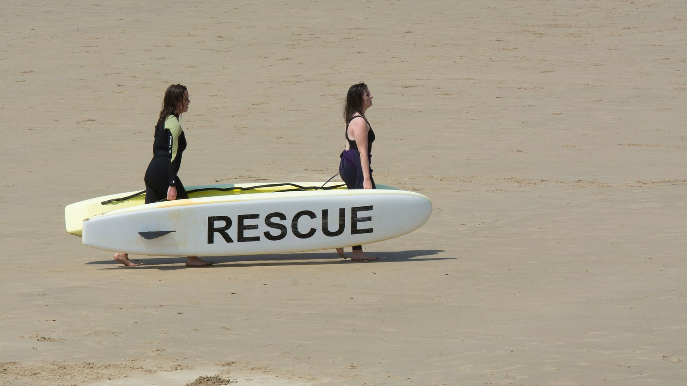
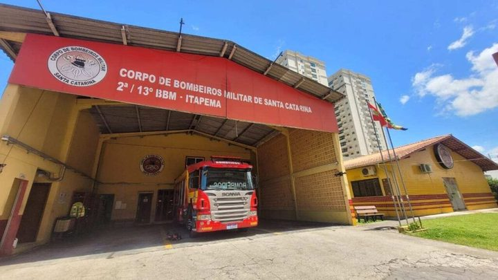

Itapema · Segurança
Itapema · SegurançaItapema assinou R$ 195,6 mil em equipamento de praia num só dia, e o que já contratou para esta temporada é 52% menor que no mesmo ponto de 2025
O uniforme e a bandeira que essa turma vai usar.
O Corpo de Bombeiros abriu nove editais de curso de guarda-vidas civil voluntário no 13º Batalhão para esta temporada. Três são em Itapema, três em Bombinhas e três em Balneário Camboriú. Porto Belo não sedia nenhum. Contamos um por um na lista de editais de cursos ao cidadão do CBMSC. Em Itapema são 90 vagas somando as três turmas, e o teste de aptidão física do curso de formação é nesta quarta, 7 de outubro, no quartel de Itajaí: 500 metros de natação às 9h e 1.600 metros de corrida às 13h.
Em 30 segundos · Modo de Leitura, formato original Santa Informa
O verão vem aí.
Quem cuida da areia é formado antes.
O 13º Batalhão cobre Itapema e a Costa Esmeralda.
Ele abriu nove cursos de guarda-vidas voluntário nesta temporada.
Fomos contar na lista de editais do CBMSC.
Três são em Itapema.
Três em Bombinhas.
Três em Balneário Camboriú.
Porto Belo não sedia nenhum.
Em Itapema, são 90 vagas no total.
Uma turma é de formação, com 120 horas.
As outras duas são de recertificação, com 20 horas.
A recertificação é para quem já é guarda-vidas.
A formação tem aula de 26 de outubro a 4 de dezembro.
É no quartel da Rua 462, no Jardim Praia Mar.
De segunda a sexta, das 7h45 às 12h.
Antes disso vem a prova física.
Ela é nesta quarta, 7 de outubro.
E não é aqui: é em Itajaí.
500 metros de natação às 9h.
1.600 metros de corrida às 13h.
Passou de 13 minutos na água, está eliminado.
Passou de 9 minutos na corrida, também.
O tempo ainda vira nota.
Bombinhas e Balneário Camboriú já fizeram a prova deles.
Itapema é a última das três.
Ano passado a cidade teve um edital.
Este ano, três.
A inscrição durou 28 dias, contra 14 em 2025.
No estado são 68 cursos de praia em 2026.
Cada turma só sai com 15 matriculados, no mínimo.
Quantos se inscreveram, o edital não diz.
A contagem dos nove cursos é conta nossa.
Poder PúblicoPublicada em Redação Santa Informa

A lista de editais de cursos ao cidadão do CBMSC traz 222 editais publicados desde abril de 2025. Fomos contar os de guarda-vidas civil voluntário do 13º Batalhão, que é o que cobre Itapema e a Costa Esmeralda. Para esta temporada saíram nove, divididos em partes iguais entre três cidades: Itapema, Bombinhas e Balneário Camboriú, três para cada uma. Porto Belo, que tem praia e é vizinha de parede, não sedia nenhum. O único edital de Porto Belo na lista inteira é um curso de bombeiro comunitário de fevereiro de 2025.
Um é a formação, o curso que abre a porta para quem nunca foi guarda-vidas: 120 horas, 30 vagas, aula de 26 de outubro a 4 de dezembro, no quartel da Rua 462, 55, no Jardim Praia Mar, de segunda a sexta, das 7h45 às 12h. Os outros dois são de recertificação, com 20 horas e 30 vagas cada, para quem já é voluntário e precisa revalidar o certificado. O primeiro aconteceu de 14 a 18 de setembro. O segundo é de 13 a 17 de outubro. Somados, dão 90 vagas. Em agosto nós contamos 60, porque o terceiro edital tinha inscrição só a partir de 1º de setembro e passou batido.
Quem se inscreveu na formação até 18 de setembro faz o teste de aptidão física nesta quarta-feira, 7 de outubro, e não é em casa: a prova é no quartel de Itajaí, na Avenida Sete de Setembro, 1878. São 500 metros de natação às 9h e 1.600 metros de corrida às 13h. A tabela do edital elimina quem passar de 13 minutos na água ou de 9 minutos na corrida, e o tempo ainda vira nota, porque a etapa corta e classifica ao mesmo tempo. As outras duas cidades já fizeram a sua: Balneário Camboriú em 8 de setembro, Bombinhas em 12 e 13 de setembro. Itapema é a última das três, e as três nadam no mesmo quartel de Itajaí.
Na mesma lista, Itapema aparece com um edital de guarda-vidas em 2025 e três em 2026. O prazo de inscrição também abriu mais: foram 28 dias este ano, de 22 de agosto a 18 de setembro, contra 14 dias no ano passado, de 11 a 24 de setembro. O calendário da aula quase não mexeu, de 27 de outubro a 5 de dezembro em 2025 e de 26 de outubro a 4 de dezembro agora. No estado inteiro, a conta dá 68 cursos de guarda-vidas de praia em 2026, espalhados por oito batalhões, contra 43 no pedaço de 2025 que a lista alcança.
O resumo de 30 segundos está no topo e a versão completa é o texto acima. Aqui ficam as três leituras da casa sobre o mesmo assunto.
Clara, a otimista
Três turmas numa cidade só é bastante coisa. No ano passado Itapema teve uma, agora tem a formação e mais duas recertificações, e isso quer dizer que o pessoal que já trabalhou na areia vai voltar com o certificado em dia, em vez de sumir no fim da temporada.
Repare também no calendário. A formação termina em 4 de dezembro, bem antes do movimento grande de fim de ano, e o curso é de manhã, das 7h45 às 12h, que é horário de quem estuda ou trabalha à tarde conseguir encaixar. Alguém pensou nisso.
Seu Prudêncio, o criterioso
Merece atenção a prova ser em Itajaí. São cerca de 30 quilômetros de ida para quem mora aqui, numa quarta-feira de semana comum, com natação às 9h e corrida às 13h, ou seja, o dia inteiro parado. Para candidato sem carro, isso pesa na conta antes mesmo de entrar na água.
Vale acompanhar outro ponto: cada turma só sai com 15 matriculados, e o edital não publica quantos se inscreveram. Enquanto esse número não aparece, ninguém de fora consegue saber se as 90 vagas viraram 90 pessoas ou bem menos.
Uma sugestão útil, e barata: divulgar depois da prova quantos fizeram, quantos passaram e quantos postos vão funcionar na temporada. Dito isso, o batalhão organizou bem a temporada. Triplicar o número de turmas na cidade e dobrar o prazo de inscrição são decisões que ampliam o acesso, e isso merece ser dito.
Caco, o sarcástico
Itapema tem sete quilômetros de praia, mas para provar que sabe nadar o candidato daqui pega a estrada até Itajaí. Bombinhas e Balneário Camboriú também. Deve ser a única região do mundo onde o teste de água fica mais longe do que a água.
E tem o tempo de corte na corrida: nove minutos para 1.600 metros. Quer dizer que boa parte de nós seria eliminada antes de descobrir se sabe nadar.
Agora, sem ironia: gente que passa 120 horas estudando salvamento para trabalhar de graça na areia no verão merece mais do que uma piada. Merece que a gente saiba o nome do posto e o horário em que ele abre.
Fontes: os nove editais foram contados na lista de editais de cursos ao cidadão do Corpo de Bombeiros Militar de Santa Catarina, que traz 222 editais publicados desde abril de 2025, lidos um a um. Os três de Itapema são o edital 2.1.3.26.024/2026, do curso de formação, com as vagas, o endereço do quartel, a tabela de tempos do Anexo Único e a data da prova física, e os editais de recertificação 2.1.5.26.042/2026 e 2.1.5.26.047/2026. As datas das provas das cidades vizinhas estão nos editais de formação de Bombinhas e de Balneário Camboriú. A comparação com o ano passado saiu do edital 2.1.3.25.027/2025, a formação de Itapema de 2025. Os pré-requisitos e as regras do serviço voluntário estão na página Como ser Guarda-Vidas Civil Voluntário, do CBMSC. A abertura das vagas em agosto está na nossa matéria de 20 de agosto, e o material que esse pessoal vai usar na areia está na de ontem. A contagem dos nove cursos, a divisão por cidade, a soma das 90 vagas e a comparação entre 2025 e 2026 são conta nossa, feita em 5 de outubro de 2026.
Itapema · SegurançaO uniforme e a bandeira que essa turma vai usar.

Itapema · SegurançaQuando contamos duas turmas, antes de aparecer a terceira.
 Itapema · Segurança
Itapema · SegurançaO que a cidade paga para um órgão do estado.